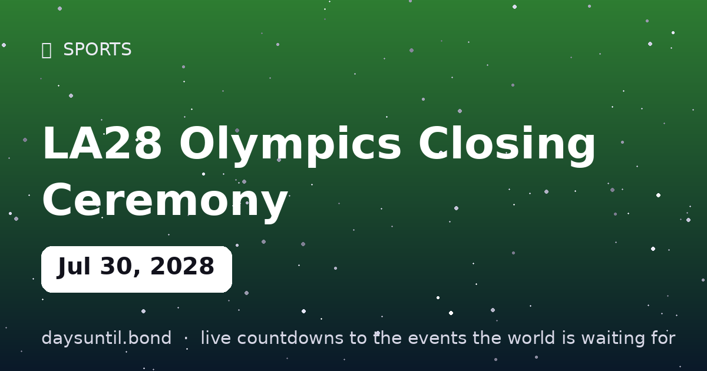

How Many Days Until LA28 Olympics Closing Ceremony?
–days
–hours
–minutes
–seconds
LA28 Olympics Closing Ceremony falls on Sunday, July 30, 2028.
📅 – weeks
💼 – weekdays
🛌 – weekend days
🗓️ – months (approx)

Quick facts
| Date | Sunday, July 30, 2028 |
|---|---|
| Days away | Live counter above |
About LA28 Olympics Closing Ceremony
Seventeen days of competition end July 30, 2028 with the closing ceremony — the handover to Brisbane 2032, and the end of the last countdown of the Games.
The final day of LA28. The live counter above runs to the release/event date worldwide (local time zones may shift availability by hours).